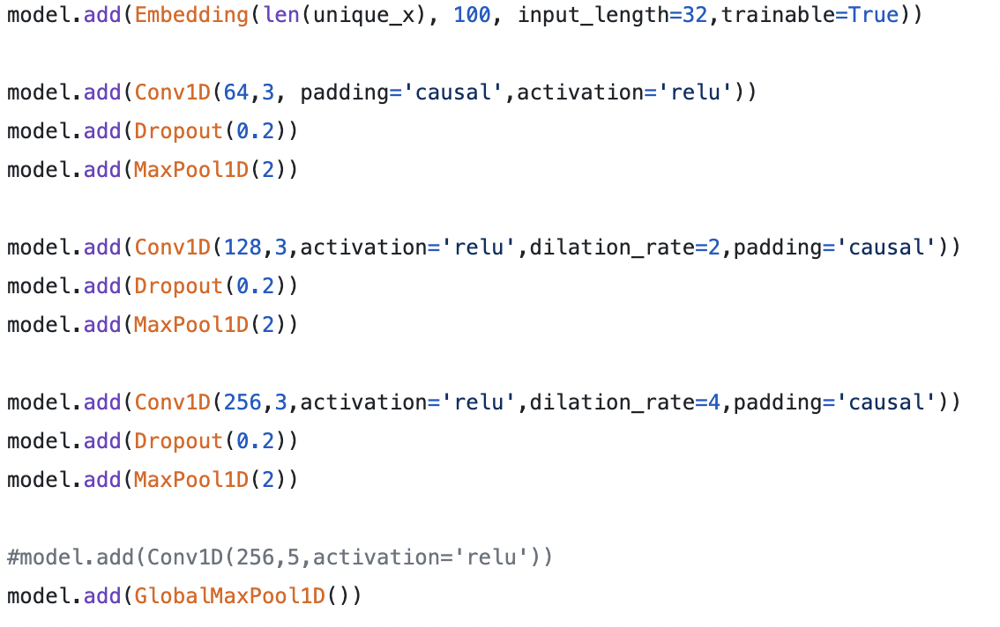

Click to listen.
With some friends from orchestra, I curated a database of MIDI files transcribed from real jazz recordings. Then, we experimented with both WaveNet and Long Short Term Memory architectures to build our Models.
Each note is converted to an integer. The data is run through multiple convolution layers and the model outputs its predicted melody.
